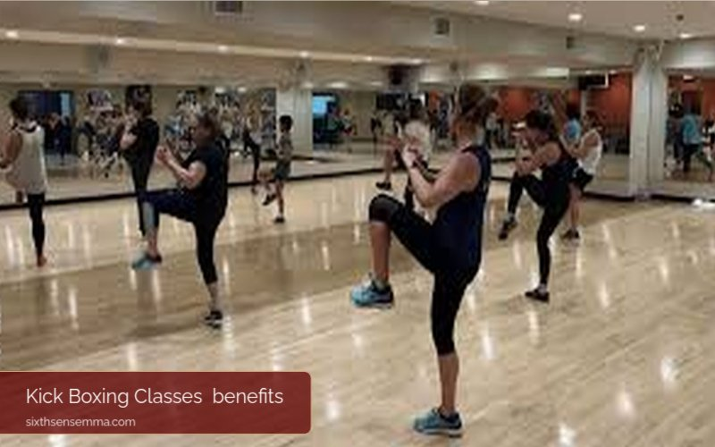

Transform Your Fitness Journey with Kick Boxing Classes

kick boxing classes at Sixth Sense MMA! Kickboxing is a workout routine that falls in between martial arts and cardio, thus, you can easily identify it as a double workout approach that is both fun and intensive and can be perfectly designed to change your views on the present. This way of exercising not just kills calories and does muscle build, but it also empowers you with the necessary self-defense skills needed in an emergency. In this article, we will cover the key features of kickboxing, illustrate the various benefits it comes with, and tell you how it can help you with fitness goals.
Let’s move your body and soul closer to the perfect health and strength that you desire through kickboxing!Do you want an exhilarating and impactful workout to spice up your gym routine? Explore our kickboxing classes at Sixth Sense MMA. One-of-a-kind kickboxing combines the precision of martial arts and the vitality of cardio, providing a workout that changes both body and mind.
What is Kick Boxing?
The Meaning Kickboxing is briskly moving of legs and arms in martial arts with fists. It has introduced elements features and kicks such as the one borrowed from karate and some other martial arts. This high-intensity training is very beneficial in improving stamina, strength, flexibility, and coordination.
Not only does kickboxing helps a person to lose weight through burning calories, but it also makes them more skilled in self-defense, thus making it a versatile option for those who do not like sweating yet wish to acquire skills and live healthy lives.
Kickboxing Features Set of Techniques:
Kickboxing is a mix of styles from boxing (like jabs, crosses, uppercuts, and hooks) and kicks (such as roundhouse kicks, front kicks, and side kicks) of various martial arts like boxing and Muay Thai.
Cardio Control: The cardio workouts for kickboxing are typically very intense, with them burning off large numbers of calories in an extremely efficient manner and thus the workouts also get you in very good shape.
Strength and Conditioning: Workouts generally include resistance training and bodyweight movements for building and muscle strength, power, and muscular endurance. Moreover, it helps in bettering fitness and stability of the core.
Life-Saving Skills: Kickboxing focuses on the development of practical self-defense techniques, which could not only save lives in a real-life situation but also boost the self-respect and confidence of the individuals practicing it.
Discussion of the Class Structure: Different instructors might include warm-ups, technique practice, strength workouts, and perhaps, sparring if the participant is advanced. Regardless, the course would be perfect for everyone out there.
Stress Outlets: Feelings of stress and anger that can lead to mental health problems can be alleviated through physical activity. Moreover, it helps a lot in keeping positive and emotionally balanced through serotonin and dopamine which are released by laughter and exercise.
Friendly Community: A lot of places for practicing kickboxing are held in the atmosphere of a friendly community, hence you can encourage and assist each other, and make the sessions more enjoyable.
Flexibility and Agility Training: Some specific training activities in kickboxing programs include speed and agility drills as well as stretching that can help improve your flexibility, balance, and coordination skills.
Adaptation: The sport, regardless of one’s skill or age, may be adjusted from high- to low-intensity sessions. Its characteristics for starters are to do easier exercises that make them more comfortable and advanced ones have some through various levels of intensity together with distance and speed.
Diversity and Fun: Mixing steps, rhythm, and music (in some cases) in most classes presents a situation that is lively and attracts participant’s interest, thus workouts become dynamic and enjoyable, thus the non-distinctiveness of traditional gyms get to reduce
Age Groups for Kick Boxing Classes:
Kick boxing classes building interest in a wide range of age groups that normally include those starting from 8 years old up to the adults. Here’s a general breakdown:
Children (Ages 8-12):
These venues are geared towards children’s fitness and fun. They offer basic techniques, coordination, discipline, as well as games. These classes also promote physical fitness and social skills.
Teenagers (Ages 13-17):
Teenagers can benefit from our kick boxing classes with the opportunity to gain some self-protection skills, be more engaged with it and work as a means to help in the future as these classes are practical and at times hope of being engaged in events.
Adults (Ages 18 and Up):
Adult classes are mixed levels and can have beginners starting with a punch and a kick or sparring to advanced practitioners. Self-defense is another training area for adults and the classes are similar to those of the teens’ with the variation of the techniques.
Older Adults (Age 50+):
Low-impact workouts, exercise classes are presented as a safety precaution to provide seniors with the opportunity to burn calories, muscle, bone, and heart-strengthening for their overall wellness.
Benefits of Kick Boxing Classes
There are so many welfares that you can derive if you consider participating in kick boxing classes such as:
Overall Fitness:
Kick boxing is a total body workout that tests your strength, endurance, and flexibility. It is the harmonious combination of punching, kicking, and footwork that helps you to work out the muscles of your chest and core and therefore be in good physical condition.
Effective Stress Relief:
In kickboxing, the fast-paced, high-energy workout is an outlet for stress and frustration. The physical engagement of striking a punching bag and the nature of such situations offer the athlete an environment where they can unleash pent-up energy, thus they come out feeling relaxed and empowered.
Skill Building:
One of the best things about being in kickboxing classes is gaining invaluable skills that can come in handy when you are in situations where you need to fend off someone. Apart from self-defense, they also learn how to protect themselves while being focused on enhancing their confidence and mind level.
Community and Support:
At Sixth Sense MMA, our classes resemble like-minded community gatherings, thereby offering a positive and motivating atmosphere. Come where you’ll find people sharing similar experiences with you and making you feel part of a family as you share experiences and celebrate milestones together.
Adequate Options for Beginners and Advanced Practitioners:
Our kick boxing classes are meant to be for both novice and experienced guys. The idea is to go step by step and to give a specific skill or competence each participant can develop on.
Services Offered at Sixth Sense MMA
Sixth Sense MMA offers a variety of kickboxing classes that are strictly designed for adults. The following are the classes that we do cater to:
Kickboxing Classes for Adults: The main purpose of these sessions is for the adults to practice their different techniques and get their conditioning and skill levels up. This is where our skillful teachers come in, giving you a structured class that slowly develops your capabilities and technique.
Kickboxing Classes for Women: It is not necessary for you to be a woman to do these classes, but they are tailored specifically for women who want to either learn self-defense or take a vigorous workout. Your confidence will grow, as you work along with other women in training and you will get a sense of sisterhood.
Kickboxing Classes for Beginners: Are you in your first-year of kickboxing? These classes are a great introduction if you are! We present the basic moves in a simplified way and then encourage you to master them at your own pace, which is possible for even the more advanced techniques that follow once your confidence has built up.
Personalized Training Sessions: We provide customers with fitness goals one-of-a-kind training sessions aside from classes being the same. While fitness is what you’re aiming for, the instructors work with you to craft a program that caters to your needs like gaining strength, polishing your technique, or just gearing up for competitions.
Flexible Class Schedules: We know that going to the gym can be difficult, especially if you have a busy schedule. For this reason, we have many classes at different times during the week. This allows you to decide on your fitness program that you can easily fit into.

What to Expect in a Kick Boxing Class
When you decide to visit the MMA Training Center, you will have to be equipped with the following:
An Introductory Exercising Period: Each class is started with exercising which is comprised and interconnected to your workout thus minimizing the risk of injuries.
Basic Skill Demonstrations: When it comes to the demonstrations of the essential exercises, our experienced coaches make it a step-by-step process for the students to follow, thereby guaranteeing them the right aspects and applications of it like punches, kicks, and defensive moves.
Aerobic Workouts and Strengthening: Mix up some high-intensity exercises that can help you improve your cardio fitness, strengthen your muscles, and become more agile.
The Sparring Session (Optional): Intermediate and advanced classes often hold controlled sparring sessions for those learners who desire to practice and develop their abilities in a healthy atmosphere.
Stretching: The classes are ended with a small period of time for stretching and breathing exercises, which are aimed at the body recovery and flexibility improvement together with the release of all the tension from your body.
Conclusion
Redefining the path of your physical fitness begins once you decide to take the plunge. Come to us at Sixth Sense MMA and uncover the fun and health gains of the kick boxing tuition. Regardless of whether you yearn for perspiration, protection or adventure, we, the staff, are here to lend a hand every single time you come.
Call to Action
Are you ready to kickstart your transformation? Contact us today to learn more about our kick boxing classes or sign up online to secure your spot in our next session. Join our community and start your journey toward a healthier, stronger, and more empowered you!
FAQ’S
Yes, kickboxing classes provide great exercises, instructing participants in self-defense and helping them develop physical strength and self-assurance.
Usually, these prices vary from $10 to $25 for each single class, on a monthly basis it can be even cheaper from $80 to $150 depending on the gym.
No, there is no age restriction in the matter. We can do kickboxing at any age, but group-challenges may have a fitness level.
Yes, the best choice is three times a week. To sum it up, this is a pretty fine frequency for them to see increasing skills and to enlarge their fitness in advance.
Potential disadvantages include the risk of injury, high-impact stress on joints, and the requirement for physical conditioning.
Yes, kickboxing can burn many calories, which is helpful for weight loss as long as you have the right diet.
A one-hour kickboxing session will be enough to get the maximum workout, to learn the skills, to get fitness.
Yes, kickboxing is one good way of learning some striking techniques and practical self-defense moves that could be helpful to you in real-life fights.
People can be familiar with basic skills after 2-3 months, and the level of mastery can range from months to years depending on the dedication.
Immense energy and motivation, resulting from both physical and mental development, the loss of weight, and extra enhanced skills are some of the major changes that you can expect in your body.
Certainly not. Many people practice MMA during their 40s. However, one should be mindful of health restrictions, hence martial arts are always a good option for everyone regardless of their age.
Yes, sure! In the same way, many people start kicking around one age.
Injuries that are possible in kickboxing are the most common ones such as sprains, strains, and cuts usually found in the hands, wrists, or feet.
You can achieve better muscle and core strength, contributing to a flat stomach with a well-balanced diet and kickboxing practice.
Yes, kickboxing is generally a high-impact sport that can really become hard on the joints but when done right will soar to an acceptable level of minimum joint stress.
Train with us in Coppell
The first class is free. Shorts, a t-shirt and a water bottle. We lend the rest.
Book a free class